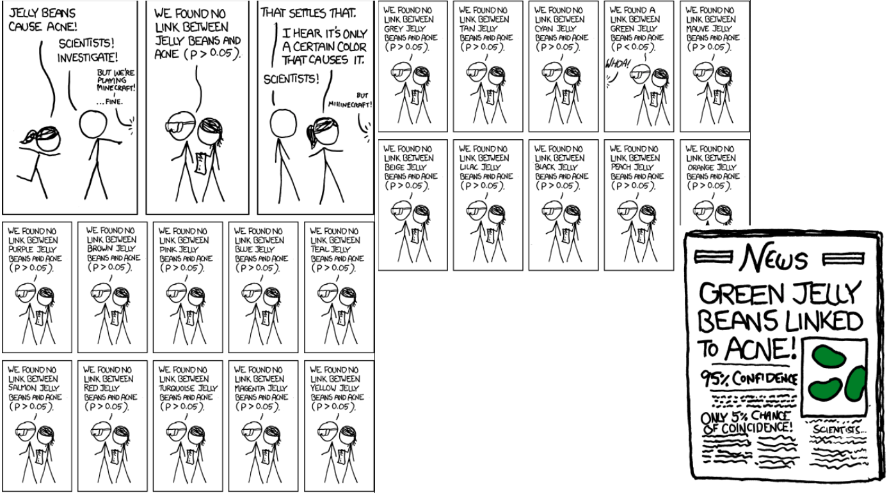
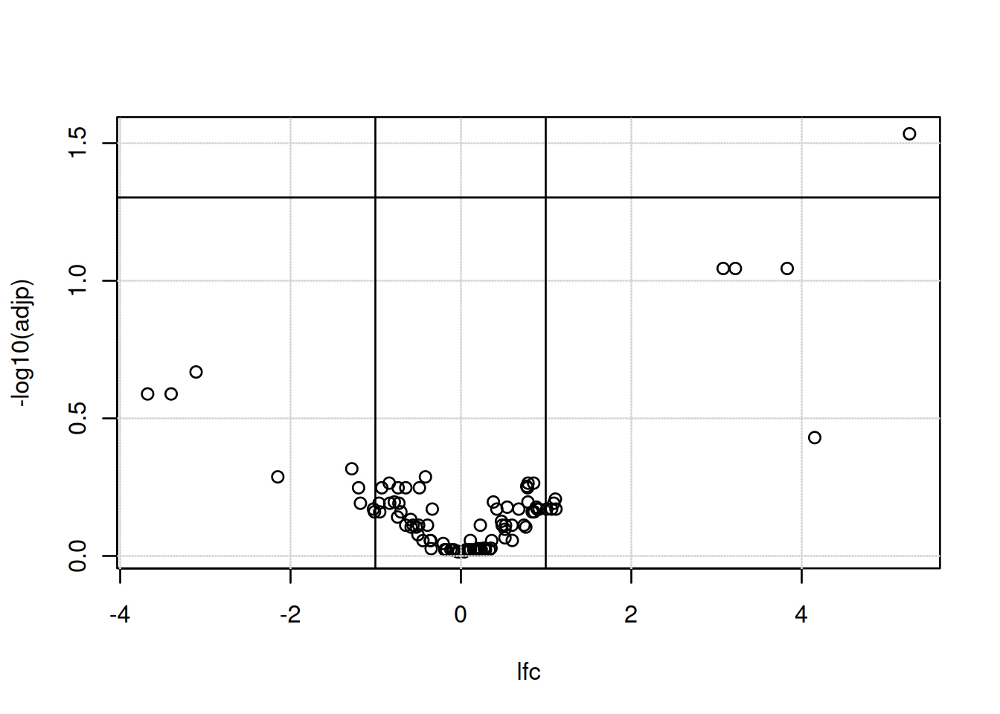

Chapter 7 Hypothesis testing
The goal of this chapter is to demonstrate some of the fundamentals of hypothesis testing as used in bioinformatics. For prerequisites within the Biomedical sciences masters degree at the UCLouvain, see WFARM1247 (Traitement statistique des données).
Parts of this chapter are based on chapter 6 from Modern Statistics for Modern Biology (Holmes and Huber 2019Holmes, Susan, and Wolfgang Huber. 2019. Modern Statistics for Modern Biology. Cambridge Univeristy Press.).
7.1 Refresher
We have flipped a coing 100 times and have obtained the following results.
## flips
## H T
## 62 38If the coin was unbiased we expect roughly 50 heads. Can we make any claims regarding the biaised or unbiaised nature of that coin?
A coin toss can be modeled by a binomial distribution. The histogram below shows the binomial statistic for 0 to 100 heads; it represents the binomial density of an unbiased coin. The vertical line shows the number of head observed.
Figure 7.1: Binomial density of an unbiased coin to get 0 to 100 heads. The full area of the histogram sums to 1.
Above, we see that the most likely outcome would be 50 heads with a probability of 0.0795892. No head and 100 heads have a probability of \(7.8886091\times 10^{-31}\).
We set
- \(H_0\): the coin is fair
- \(H_1\): the coin is baised
If 62 isn’t deemed too extreme, then we won’t reject \(H_0\) and conclude that the coin in fair. If 62 is deemed too extreme, then we reject \(H_0\) and accept \(H_1\), and conclude that the coin is baised.
To define extreme, we set \(\alpha = 0.05\) and rejet \(H_0\) if our result is outside of the 95% most probably values.
Figure 7.2: Binomial density of for an unbiased coin to get 0 to 100 heads. The areas in red sum to 0.05.

We can also compute the p-value, the tells us how likely we are to see such a extreme or more extreme value under \(H_0\).
##
## Exact binomial test
##
## data: 62 and 100
## number of successes = 62, number of trials = 100, p-value = 0.02098
## alternative hypothesis: true probability of success is not equal to 0.5
## 95 percent confidence interval:
## 0.5174607 0.7152325
## sample estimates:
## probability of success
## 0.62Whenever we make such a decision, we will be in one of the following situations:
| \(H_0\) is true | \(H_1\) is true | |
|---|---|---|
| Reject \(H_0\) | Type I (false positive) | True positive |
| Do not reject \(H_0\) | True negative | Type II (false negative) |
See below for a step by step guide to this example.
7.2 A biological example
A typical biological example consists in measuring a gene of interest in two populations of interest (say control and group), represented by biological replicates. The figure below represents the distribution of the gene of interest in the two populations, with the expression intensities of triplicates in each population.
Figure 7.3: Expression of a gene in two populations with randomly chosen triplicates.

We don’t have access to the whole population and thus use a sample thereof (the replicated measurements) to estimate the population parameters. We have
| control | group | |
|---|---|---|
| rep.1 | 5.327429 | 11.10576 |
| rep.2 | 5.723787 | 11.19393 |
| rep.3 | 7.870450 | 13.57260 |
| mean | 6.307222 | 11.95743 |
| sd | 1.368224 | 1.39947 |
We set our hypothesis as
- \(H_0\): the means of the two groups are the same, \(\mu_{1} = \mu_{2}\).
- \(H_1\): the means of the two groups are different, \(\mu_{1} \neq \mu_{2}\).
and calculate a two-sided, two-sample t-test (assuming unequal variances) with
\[ t = \frac{ \bar X_{1} - \bar X_{2} } { \sqrt{ \frac{ s_{1}^{2} }{ N_{1} } + \frac{ s_{2}^{2} }{ N_{2} } } } \]
where \(\bar X_i\), \(s_{i}^{2}\) and \(N_i\) are the mean, variance and size of samples 1 and 2.
A t-test has the following assumptions:
- the data are normally distributed;
- the data are independent and identically distributed;
- equal or un-equal (Welch test) variances.
Note that the t-test is robust to deviations8 All models are wrong. Some are useful..
In R, we do this with
## [1] 5.327429 5.723787 7.870450## [1] 11.10576 11.19393 13.57260##
## Welch Two Sample t-test
##
## data: s1 and s2
## t = -5.0003, df = 3.998, p-value = 0.007499
## alternative hypothesis: true difference in means is not equal to 0
## 95 percent confidence interval:
## -8.788162 -2.512255
## sample estimates:
## mean of x mean of y
## 6.307222 11.957431► Question
Note that this result, this p-value, is specific to our sample, the measured triplicates, that are assumed to be representative of the population. Can you imagine other sets of triplicates that are compatible with the population distributions above, but that could lead to non-significant results?
In practice, we would apply moderated versions of the tests, such as the one provided in the limma package and also widely applied to RNA-Seq count data.
7.3 A more realistic biological example
Let’s now use the tdata1 dataset from the rWSBIM1322 package that
provide gene expression data for 100 genes and 6 samples, three in
group A and 3 in group B.
## A1 A2 A3 B1 B2 B3
## feature1 429.6721 433.3133 1806.2773 3534.6396 4541.2757 1139.8326
## feature2 1320.8827 1085.5660 10643.9541 239.7528 14177.4412 678.5271
## feature3 321.5151 289.6480 9236.7965 15745.7491 443.8737 198.5716
## feature4 9348.7749 1274.8021 647.2523 601.6313 595.6266 1040.1568
## feature5 1616.9009 413.2385 43.0974 10143.6595 575.0549 4048.5851
## feature6 328.3438 11866.2342 32661.9472 8331.8745 608.3194 9331.7692► Question
Visualise the distribution of the tdata1 data and, if necessary,
log-transform it.
► Solution
We are now going to apply a t-test to feature (row) 73, comparing the
expression intensities in groups A and B. As we have seen, this can be
done with the t.test function:
##
## Welch Two Sample t-test
##
## data: x[1:3] and x[4:6]
## t = 0.1728, df = 3.999, p-value = 0.8712
## alternative hypothesis: true difference in means is not equal to 0
## 95 percent confidence interval:
## -3.444807 3.902010
## sample estimates:
## mean of x mean of y
## 10.14391 9.91531► Question
- Interpret the results of the test above.
- Repeat it with another features.
► Question
We would now like to repeat the same analysis on the 100 genes.
Write a function that will take a vector as input and perform a t-test of the first values (our group A) against the 3 last values (our group B) and returns the p-values.
Apply the test to all the genes.
How many significantly differentically expressed genes do you find? What features are of possible biological interest?
► Solution
► Question
The data above have been generated with the rnorm function for all
samples.
Do you still think any of the features show significant differences?
Why are there still some features (around 5%) that show a significant p-value at an alpha of 0.05?
To answer these questions, let’s refer to this xkcd cartoon that depicts scientists testing whether eating jelly beans causes acne.
Figure 7.4: Do jelly beans cause acne? Scientists investigate. From xkcd.
The data that was used to calculate the p-values was all drawn from the same distribution \(N(10, 2)\).
As a result, we should not expect to find a statistically significant result, unless we repeat the test enought times. Enough here depends on the \(\alpha\) we set to control the type I error. If we set \(\alpha\) to 0.05, we accept that rejecting \(H_{0}\) in 5% of the extreme cases where we shouldn’t reject it. This is an acceptable threshold that however doesn’t hold when we repeat the test many time.
An important visualistion when performing statistical test repeatedly,
is to visualise the distribution of computed p-values. Below, we see
the histogram of the tdata1 data and 100 values drawn from a uniform
distribution between 0 and 1. Both are very similar; they are flat.
Figure 7.5: Distribution of p-values for the tdata1 dataset (left) and 100 (p-)values uniformely distributed between 0 and 1 (right).

Below we see the expected trends of p-values for different scenarios. This example comes from the Variance explained.
Figure 7.6: Expected trends of p-values for different scenarios (source).
).](figs/plot_melted-1.png)
In an experiment with enough truly differentially expression features, on expects to observe a substantial increase of small p-values (anti-conservative). In other words, we expect to see more small p-values that at random, or when no statistically significant are present (uniform). All other scenarios warrant further inspection, as they might point to issue with the data of the tests.
When many tests are preformed, the p-values need to be adjusted, to take into account that many tests have been performed.
7.4 Adjustment for multiple testing
There are two classes of multiple testing adjustment methods:
Family-wise error rate (FWER) that gives the probability of one or more false positives. The Bonferroni correction for m tests multiplies each p-value by m. One then checks if any results still remains below significance threshold.
False discovery rate (FDR) that computes the expected fraction of false positives among all discoveries. It allows us to choose n results with a given FDR. Widely used examples are Benjamini-Hochberg or q-values.
The figure below illustrates the principle behind the FDR adjustment. The procedure estimate the proportion of hypothesis that are null and then adjust the p-values accordingly.
Figure 7.7: Principle behind the false discovery rate p-value adjustment (source).
).](figs/fdr.png)
Back to our tdata1 example, we need to take this into account and
adjust the p-values for multiple testing. Below we apply the
Benjamini-Hochberg FDR procedure using the p.adjust function and
confirm that none of the features are differentially expressed.
► Question
Are there any adjusted p-values that are still significant?
► Solution
7.5 Result visualisation
► Question
The tdata4 dataset is already log2 and can be processed as
it is. Practice what we have see so far and identify differential
expressed genes in group A vs B.
► Solution
► Question
Calculate a log2 fold-change between groups A and B. To do so, you need to subtract mean expression of group B from mean of group A9 We need to subtract the means because the data are already log-transformed and \(log\frac{a}{b} = log(a) - log(c)\).. Repeat this for all genes. Visualise and interpret the distribution of the log2 fold-changes.
► Solution
We generally want to consider both the statistical significance (the p-value) and the magnitude of the difference of expression (the fold-change) to provide a biological interpretation of the data. For this, we use a volcano plot as shown below. The most interesting features are those towards to top corners given that they have a small p-value (i.e. a large value for -log10(p-value)) and large (in absolute value) fold-changes.
Figure 7.8: A volcano plot.
► Question
Reproduce the volcano plot above using the adjp and lfc variables
computed above.
► Solution

Chapter 6 on testing of Modern Statistics for Modern Biology (Holmes and Huber 2019Holmes, Susan, and Wolfgang Huber. 2019. Modern Statistics for Modern Biology. Cambridge Univeristy Press.), and in particlar section 6.5, provides additional details about the t-test.
The t-test comes in multiple flavors, all of which can be chosen
through parameters of the t.test function. What we did above is
called a two-sided two-sample unpaired test with unequal
variance. Two-sided refers to the fact that we were open to reject
the null hypothesis if the expression in the first group was either
larger or smaller than that in the second one.
Two-sample indicates that we compared the means of two groups to each other; another option is to compare the mean of one group against a given, fixed number.
Unpaired means that there was no direct 1:1 mapping between the measurements in the two groups. If, on the other hand, the data had been measured on the same patients before and after treatment, then a paired test would be more appropriate, as it looks at the change of expression within each patient, rather than their absolute expression.
Equal variance refers to the way the statistic is calculated. That expression is most appropriate if the variances within each group are about the same. If they are very different, an alternative form, called the Welch t-test exist.
An important assumption when performing a t-test is the independence assumption among the observations in a sample. An additional exercise below demonstrate the risk of dependence between samples.
Finally, it is important to highlight that all the methods and concepts described above will only be relevant if the problem is properly stated. Hence the importance of clearly laying out the experimental design and stating the biological question of interest before running experiment. Indeed, quoting the mathematician Richard Hamming:
It is better to solve the right problem the wrong way than to solve the wrong problem the right way.
To this effect, a type III error has been defined as errors that occur when researchers provide the right answer to the wrong question.
7.6 A word of caution
Summary of statistical inference:
Set up a model of reality: null hypothesis \(H_0\) (no difference) and alternative hypothesis \(H_1\) (there is a difference).
Do an experiment to collect data.
Perform the statistical inference with the collected data.
Make a decision: reject \(H_0\) if the computed probability is deemed too small.
What not to do:
p-hacking
Instead of setting up one statistical hypothesis before data collection and then testing it, collect data at large, then try lots of different tests until one give a statistically significant result (Head et al. 2015Head, M. L., L. Holman, R. Lanfear, A. T. Kahn, and M. D. Jennions. 2015. “The extent and consequences of p-hacking in science.” PLoS Biol 13: e1002106. https://doi.org/10.1371/journal.pbio.1002106.).
p-harking
HARKing (Hypothesizing After the Results are Known) is the fraudulous practice of presenting a post hoc hypothesis, i.e., one based on prior result, as a priori hypotheses (Kerr 1998Kerr, N. L. 1998. “HARKing: hypothesizing after the results are known.” Pers Soc Psychol Rev 2: 196–217. https://doi.org/10.1207/s15327957pspr0203_4.).
7.7 Additional exercises
► Question
Draw three values from two distributions \(N(6, 2)\) and \(N(8, 2)\), perform a t-test and interpret the results.
Repeat the above experiment multiple times. Do you get similar results? Why?
Repeat with values from distributions \(N(5, 1)\) and \(N(8, 1)\).
► Question
Generate random data using
rnormfor 100 genes and 6 samples and test for differential expression, comparing for each gene the 3 first samples against the 3 last samples. Verify that you identify about 5 p-values smaller that 0.05. Visualise and interprete the histogram of these p-values.Adjust the 100 p-values for multiple testing and compare the initial and adjusted p-values.
► Question
We have used two-sided two-sample t-tests above. Also familiarise
yourselves with one-sided, one-sample and paired tests. In particular,
verify how to implement these with the t.test function.
► Question
Simulate a dataset of log2 fold-changes measured in triplicate for 1000 genes.
What function would you use to generate these data?
What test would you use to test for differential expression? Apply it to calculate 1000 p-values.
Visualise and interpret the histogram of p-values.
FDR-adjust the p-values.
► Question
Load the tdata2 dataset from the rWSBIM1322 package. These data
represent the measurement of an inflammation biomarker in the blood of
15 patients, before and after treatment for a acute liver
inflammation. Visualise the data and run a test to verify if the
treatment has had an effect or not.
► Question
Load the tdata3 data from the rWSBIM1322 package (version >=
0.1.5). 100 genes have been measures in 2 groups (A and B) in
triplicates.
Perform a t-test, visualise the p-value on a histogram. Do you expect to see any genes significantly differentially expressed? Verify your expectation by adjusting the p-values for multiple comparisions. Are there any significant results after adjustment?
Produce a volcano plot for these results and interpret what you see.
Unless you haven’t already done so, visualise the distributions of the genes for the 6 samples. What do you observe? Re-interpret the results obtained above in the light of these findings.
Normalise your data using centring. Visualise the distributions before and after transformation and make sure you understand the differences.
Repeat the first point above on the normalised data. Do you still find any differentially expressed genes? Explain why.
► Question
Load the
cptac_se_protdata and extract the first feature,P00918ups|CAH2_HUMAN_UPS, a protein in this case. Perform a t-test between the groups 6A and 6B.Duplicate the data of that first feature to obtain a vector of 12 values and repeat the t-test (now 6 against 6) above. Interpret the new results.
The coin example, step by step
The following code chunk simulates 100 coin toss from a biased coin.
set.seed(2)
n <- 100
p <- 0.59
flips <- sample(c("H", "T"), size = n,
replace = TRUE,
prob = c(p, 1 - p))If the coin were unbiased we expect roughly 50 heads. Let us see how many heads and tails there are.
## flips
## H T
## 62 38We calculate the binomial statistic for a number of flips between 0 and 100. This is the binomial density for an unbiased coin.
library("dplyr")
num_heads <- sum(flips == "H")
binomial_dens <-
tibble(k = 0:n) %>%
mutate(p = dbinom(k, size = n, prob = 0.5))► Question
Write some code to check that the probabilties from the binomial statistic sum to \(1\).
Change the
probargument and show that the probabilities still sum to \(1\).
The following code chunk plots the binomial statistic and the number of heads observed is marked in blue.
library("ggplot2")
ggplot(binomial_dens, aes(x = k, y = p)) +
geom_bar(stat = "identity") +
geom_vline(xintercept = num_heads)
► Question
- Change the prob argument above and re-plot the binomial statistic, what do you notice about how the distribution is centered?
Now, we set the size of the reject threshold, this is a choice and corresponds to how many false discoveries we are happy to allow.
► Question
Without looking below use the arrange function from
dplyrto order the probabilities, smallest first.Looking at the output, what is the most unlikely number of heads to observe?
Looking at the output, what is the most likely number of heads to observe?
► Solution
► Question
Let us plot the reject region in red
ggplot(binomial_dens) +
geom_bar(aes(x = k, y = p, fill = reject), stat = "identity") +
scale_fill_manual(
values = c(`TRUE` = "red", `FALSE` = "#5a5a5a")) +
geom_vline(xintercept = num_heads, col = "blue") +
theme(legend.position = "none")
► Question
- Is there evidence that our coin is biased?
- Change the size of the reject region to a smaller value, what is our conclusion now?
The above test already has an easy to use function in R:
##
## Exact binomial test
##
## data: num_heads and n
## number of successes = 62, number of trials = 100, p-value = 0.02098
## alternative hypothesis: true probability of success is not equal to 0.5
## 95 percent confidence interval:
## 0.5174607 0.7152325
## sample estimates:
## probability of success
## 0.62Page built: 2024-12-09 using R version 4.4.1 (2024-06-14)